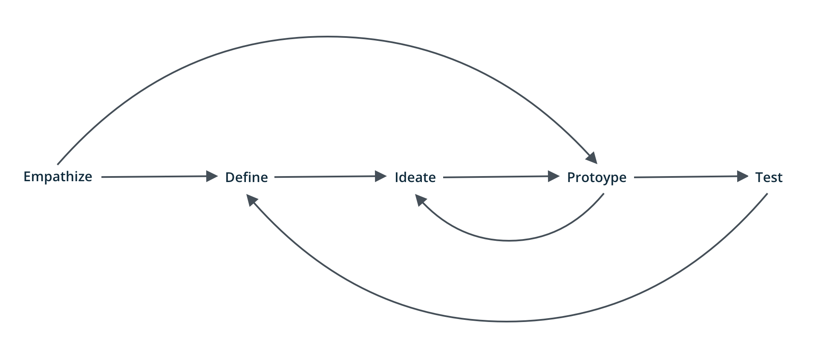
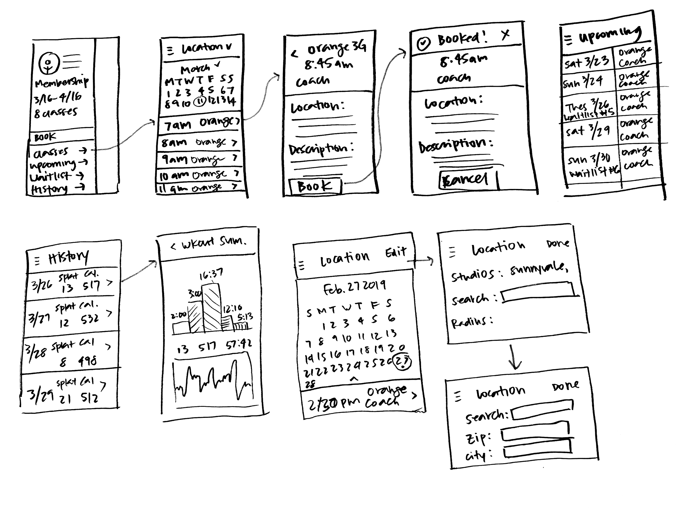

UX Design
Orangetheory Fitness
Orangetheory Fitness (OTF) is a science-backed, technology-tracked, coach-inspired group workout designed to produce results from the inside out. As an avid user of the OTF workout app, I have found myself frustrated when trying to book multiple classes at the same time. I decided to redesign the booking flow.
My Role
- UX Designer
Timeline
- Mar. 2019 - Apr. 2019
Tools
- Sketch, InVision
Skills
- User Research, Prototyping, Wireframing, User Flow
Introduction
Background
I started my fitness journey and became an OTF member in August 2018 and have been extremely pleased with the results so far. Working out not only allows me to achieve my fitness goals but serves as a stress reliever as well. I purchased the silver membership which allows me to go to eight classes per month.
Once a member, booking classes is made convenient by using the OTF app. The app has options to sign up for classes at different studio locations, view upcoming classes, past attendance, waitlists, and much more.
After each workout, a performance summary is emailed to you. You can also download the OTBeat app which will have an archive of all your workout summaries.
Process
Problem
While signing up for classes is made convenient by being able to book through the app, users still come across friction due to the overwhelming amount of actions that can be done, confusing wording, and the fact that there is a separate app for viewing workout stats. How can I reduce friction during the OTF experience from sign up to viewing performance summary?
Pain Points
Many of my friends use the OTF app so I decided to interview them to see if they experienced any problems while signing up for classes. I also decided to survey a few newcomers before my classes to see if there were any pain points that seasoned OTF goers didn't experience. I then used the interviews to decide the main pain points of the app.
- 1. 7/7 interviewees are frustrated that they can't see how many classes they've booked so far/how many they have left.
- 2. 2/7 interviewees are frustrated that the app doesn't show when their membership renews. (Note: specifically newcomers)
- 3. 7/7 interviewees find it difficult to book multiple classes at a time.
- 4. 6/7 interviewees find that having a separate app for their workout summaries is inconvenient and unnecessary.
- 5. 5/7 interviewees find it hard to view classes you signed up for if they signed up at multiple locations.
Research
Competitive Analysis
I studied the mobile apps of OTF competitors. In my opinion, I would say there are two categories of competitors: workout classes/bootcamps and regular gyms. The regular gym provides walk-in classes and therefore are first come first serve. The workout classes have limited space and therefore users must book beforehand.
Some competitors: Soulcycle, Corepower Yoga, Barry's Bootcamp, Flywheel, Peloton, 24 Hour Fitness, Citysports Club.
Ideation
Wireframes
Final Design
Prototype
After getting feedback about the user flow from my wireframes, I made my prototype and tested it on users to see if the redesign reduced frustration when trying to book classes through the OTF app.
User Testing
I tested my redesign on the same participants during my initial interviews to see if they felt that friction and frustration was reduced when trying to sign up for classes.
- 1. 7/7 interviewees love that the number of classes they have left can be easily found.
- 2. 7/7 interviewees find it useful that the redesign shows when their membership renews (Note: even seasoned goers don't mind having that reminder)
- 3. 7/7 interviewees find the new booking flow much easier to book multiple classes at the same time.
- 4. 7/7 interviewees find that having the workout summaries in the same app is convenient. They appreciate that they are able to have less apps downloaded on their phone.
- 5. 7/7 interviewees find it much easier to book classes at different locations.
Takeaways
Gathering research through user interviews was really important in this process. While I experienced frustration myself, I needed to confirm if others were as well. Through interviews, I was able to find pain points that newcomers experienced that seasoned goers already adapted too.